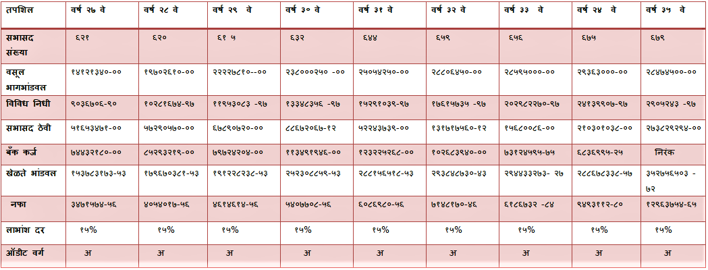
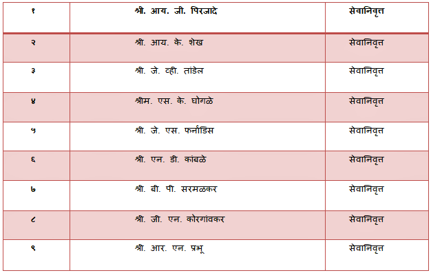
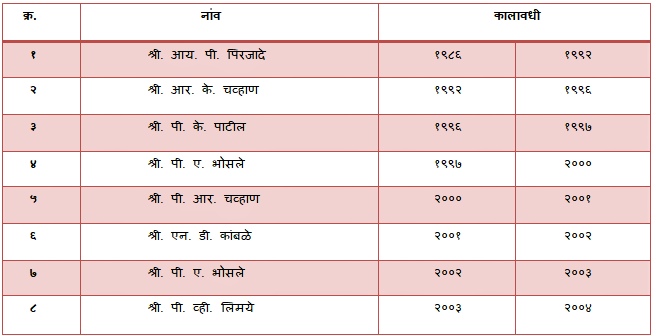
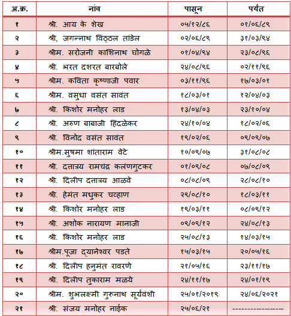

मनोगत
मनोगत
नमस्कार!
आदरणीय सभासद बंधु आणि भगिनींनो आपल्या संस्थेच्या ३५ व्या वार्षिक सर्वसाधारण सभेच्या शुभप्रसंगी, सिंधुदुर्ग परिषद आरोग्य सेवा कर्मचारी सह. पतसंस्था मर्या. सिंधुदुर्ग आरोस
या पातसंस्थेचा अध्यक्ष या नात्याने मे आपणा सर्वांचे मनापासून स्वागत करतो.
सन १९८६ मध्ये कै. श्री. तांडेल साहेब आणि त्यांच्या इतर सहकाऱ्यांनी मिळून अगदी तुटपुंज्या रक्कमेत आपली संस्था स्थापन केली आणि आज आम्ही त्यांच्याच आचारविचारांचे पालन करून
आणि आपल्या सर्वांच्या सहकार्याचा बळावरच आपल्या संस्थेची वाटचाल प्रगती पथावर नेत आहोत आणि ही घोडदौड अशीच चालू राहील तीच खऱ्या अर्थाने श्री.तांडेल साहेबांना श्रद्धांजली असेल .
आजच्या क्षणी आपली संस्था कुठल्याही बँकेचे कॅश क्रेडिट वापरत नाही ,याचा मला सार्थ अभिमान आहे . त्याच बरोबरब आणखी एक गोष्ट आवर्जून नमूद करावीशी वाटते ती म्हणजे
सन २०२०-२०२१ चे ऑडिट करत असताना ऑडिटरनी आपल्या पथसंस्थेची दपटर ठेवण्याची पद्धत उत्कृष्ट आहे, असे सांगून आपल्या चांगल्या कामाची पोच-पावती दिली.
आणि त्यावेळी आपल्या पथसंस्थेत आपल्या कर्मचाऱ्यांची निवड अगदी योग्य होती हे पुन्हा एकदा सिद्ध झाले. आज इतर कर्मचारी आपल्या पाथसंस्थेची काम करण्याची पद्धत विचारण्यासाठी मुद्दाम
पथसंस्थेला भेट देतात यातच सगळं भरून पावला नाही का !
करोना काळात आपल्या सर्व कर्मचाऱ्यांनी केलेल काम खरंच खूप मोठं आहे. कित्येकांनी रात्रीचा दिवस अहोरात्र सेवा दिली आहे,जिवाची तमा न बाळगता रुग्णांना वैद्यकीय सेवा मिळून
देण्याचा पुरेपूर प्रयत्न लकेला आहे . तुमच्या या कामाचे मोल मे शब्दात नाही सांगु शकत. करोना काळात काम केलेला प्रत्येक कर्मचारी/आधिकारी हे माझ्यासाठी कोविड योद्धाच आहेत.
आपल्या बऱ्याच कर्मचाऱ्यांची इच्छा असते की आपल्या मुलांना उच्च शिक्षण मिळावं. पण काही वेळ आर्थिक अडचणीमुले ते शक्य नसते. अशावेळी आपली संस्था कर्मचाऱ्यांची मुलं ही उच्च शिक्षित व
पदावर आहेत,याचा मला अभिमान आहे . अर्थात याच्यामागे त्या मुलांची मेहनत ही आहेच.
आज आम्ही प्रत्येक कर्मचाऱ्याला शेअर्सच्या १५% लाभांश देत आहोत . तसेच प्रत्येक सभासदाची एस . बी . आय लाईफ इन्शुरंस रिफंडेबल पॉलिसी उतरवन्याचा उपक्रम सुरू केला आहे. हा उपक्रम
लवकरात लवकर पूर्ण होण्यासाठी तालुकास्तरावर नियोजनही सुरू केलं आहे . यासाठी आपलं सहकार्य मिळेल याची मला खात्री आहे . या ठीकानी माझी निवड करून आपण माझ्यावर जो विश्वास
दाखवला,त्या विश्वासाला पात्र ठरण्याचा मी प्रामाणिक प्रयत्न करेन .
संस्थेचा दैनंदिन काम पार पाडीत असताना जिल्हयातील मा. मुख्य कार्यकारी आधिकारी ,मा . उपमुख्य कार्यकारी आधिकारी, मा. मुख्यलेखा व वित्त आधिकारी,मा . जिल्हा आरोग्य आधिकारी नसेच
मा ,गटविकास आधिकारी अभियंता (ल.पा.),सर्व प्राथमिक आरोग्य केंद्राचे वैद्यकीय आधिकारी तसेच मा . गटविकास आधिकारी (सर्व ) व कार्यालयतील कर्मचारी वर्गाने संस्थेच्या मासिक वसुलीचे
बाबतीत व इतर कमी दिलेल्या बहुमोल सहकाऱ्याबद्दल संस्थेच्या संचालक मंडळाच्यावतीने मे त्यांचे आभार मनतो.
मा. जिल्हा उपनिबंधक,मा. सहाय्यक निबंधक तसेच मध्यवर्ती सहकारी बँकेचे चेअरमन,व्यवस्थापक,शाकाधिकारी त्यांच्या सहकाऱ्यांनी वेळोवेळी केलेल्या सहकाऱ्याबद्दल मे त्यांचा आभारी आहे.
संसतेच्या दैनंदिन कामकाजात संचालक मंडळातील सर्व संचालकांचे नेहमीच सहकार्य लाभत आहे ,त्या बद्दल सर्वांचे आभार . या सर्वांचा संस्थेच्या प्रगटीमध्ये सध्या कार्यरत असलेला कर्मचारी वर्ग
यांचा सिंहाचा वाट आहे. या सर्वांचे मन:पूर्वक आभार! तसेच मा. जिल्हा विशेष लेखा परिक्षक सह. संस्था ओरोस,मा. जिल्हा उपनिबंधक सह. संस्था ओरोस तसेच लेखा परिक्षक यांनी वेळोवेळी
केलेल्या मार्गदर्शनाबद्दल मी त्यांचा ऋणी आहे .
जय हिंद ! जय सहकार !!!
संचालक मंडळाच्या वतीने
श्री . संजय मनोहर नाईक
चेअरमन
संस्थेची सांपत्तीक स्थिती सन २०२० ते २०२१

मुख्य प्रवर्तक

१९८६ पासूनचे मानद सचिव

चेअरमन पद कालावधी

Leave a comment